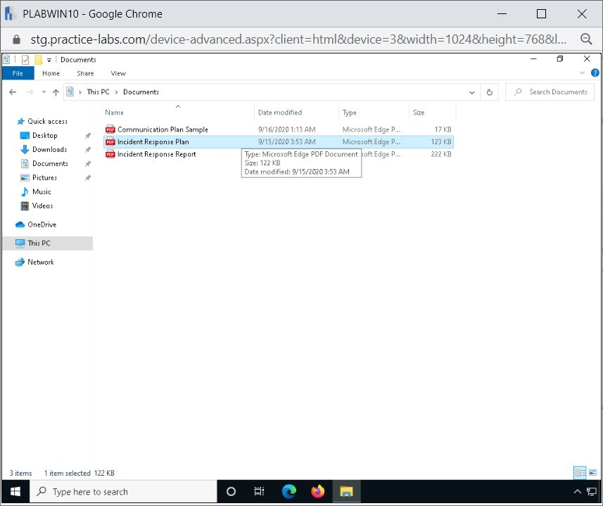
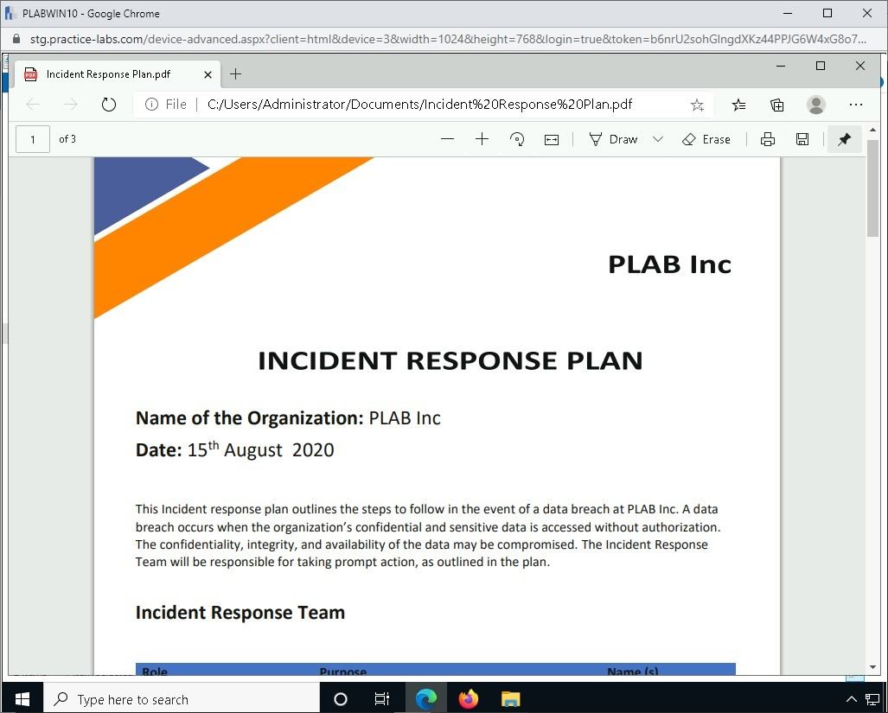

Introduction
9beca326-b493-4b0e-b3dc-d7dfb77df3c9
Welcome to the Importance of Incident Responses Practice Lab. In this module, you will be provided with information to support the development of your hands-on skills.
dc640c20-9434-45ea-b7c2-6d4d6a196bfc
Learning Outcomes
In this module, you will complete the following exercises:
- Exercise 1 - Communication Plan
- Exercise 2 - Response Coordination with Relevant Entities
- Exercise 3 - Factors Contributing to Data Criticality
After completing this lab, you will be able to:
- View a Sample Incident Response Plan
After completing this module, you will have further knowledge of:
- Limiting Communication to Trusted Parties
- Disclosing Based on Regulatory / Legislative Requirements
- Preventing Inadvertent Release of Information
- Using a Secure Method of Communication
- Reporting Requirements
- Legal and Law Enforcement
- Human Resources (HR)
- Public Relations
- Internal and External Stakeholders
- Senior Leadership
- Regulatory Bodies
- Personally Identifiable Information (PII)
- Personal Health Information (PHI)
- Special Protected Information (SPI)
- High-Value Assets
- Financial Information
- Intellectual Properties
- Corporate Information
Exam Objectives
The following exam objectives are covered in this lab:
- 4.1 Explain the importance of the incident response process
Lab Duration
It will take approximately 1 hour to complete this lab.
89816a20-56f2-42c5-bfa0-46f11f2986ba
Help and Support
For more information on using Practice Labs, please see our Help and Support page. You can also raise a technical support ticket from this page.
Click Next to view the Lab topology used in this module.
d2c53300-f951-45a9-9aa4-3d4ecae69e11
Lab Topology
During your session, you will have access to the following lab configuration.

Depending on the exercises, you may or may not use all
of the devices, but they are shown here in the layout to get an overall
understanding of the topology of the lab.
- PLABDC01 - (Windows Server 2019 - Domain Server)
- PLABDM01 - (Windows Server 2019 - Domain Member)
- PLABKALI01 - (Kali Linux 2019 - Linux Kali)
- PLABWIN10 - (Windows 10 - Domain Member Workstation)
- PLABCENTOS - (Centos 8 Linux - Stand-alone Linux Server)
- PLABALIENVAULT - (Alien Vault Linux Security Management Platform)
Click Next to proceed to the first exercise.
<
Home |
README >
CompTIA Cybersecurity Analyst (CySA+) Practice Labs
Exercise 1 - Communication Plan
An incident response plan must include a communication
plan, which allows the Incident Response (IR) team to communicate with
the right stakeholders.
Along with the right stakeholder, the communication plan must also focus on delivering the correct message promptly.
In this exercise, you will learn about the various aspects of communication in the incident response plan.
Learning Outcomes
After completing this exercise, you should be able to:
- View a Sample Incident Response Plan
After completing this exercise, you will have further knowledge of:
- Limiting Communication to Trusted Parties
- Disclosing Based on Regulatory / Legislative Requirements
- Preventing Inadvertent Release of Information
- Using a Secure Method of Communication
- Reporting Requirements
Your Devices
You will be using the following device in this lab. Please power this on now.
- PLABWIN10 - (Windows 10 - Domain Member Workstation)
Task 1 - View a Sample Incident Response Plan
Incident Response is a process that an organization
uses to handle a cyberattack or security breach. To manage the incident,
the organization must have an incident response plan that outlines the
steps that have to be followed by the incident response team in case of a
cyberattack or data breach.
In this task, you will view a sample incident response plan from the lab.
Step 1
Connect to PLABWIN10.
Click the File Explorer icon on the taskbar.
Figure 1.1 Screenshot of PLABWIN10: Clicking the File Explorer icon in the taskbar.
Step 2
In the File Explorer window, double-click Documents.
 Figure 1.2 Screenshot of PLABWIN10: Clicking the Documents folder on the File Explorer window.
Figure 1.2 Screenshot of PLABWIN10: Clicking the Documents folder on the File Explorer window.
Step 3
Double-click on the pdf file Incident Response Plan.
Figure 1.3 Screenshot of PLABWIN10: Clicking the Incident Response Plan document.
Step 4
Browse through the Incident Response Plan pdf document.
The sample document shows the team involved in the event of a data breach and the steps to follow.
Figure 1.4 Screenshot of PLABWIN10: Displaying the Incident Response Plan document.
Close the Incident Response Plan document.
Limiting Communication to Trusted Parties
Once an incident occurs, communication becomes critical between the stakeholders.
When such a situation arises where you have to deal
with an incident, you need to ensure that you communicate the correct
message only with the designated officials or personnel.
There are going to be stakeholders who play different roles.
You need to ensure that you only share the
information that is necessary for the stakeholder to know. The correct
piece of information to a specific stakeholder will allow that person to
focus on the tasks that he or she needs to perform.
Providing more than required information to a stakeholder may simply generate confusion.
Disclosing Based on Regulatory / Legislative Requirements
In certain industries, such as credit cards, you need
to comply with specific regulations. Such regulations may require you
to initiate communication with the right stakeholders when an incident
occurs.
When complying with regulation, communication with the stakeholders is a mandate that has to be followed.
Preventing Inadvertent Release of Information
During an incident, the inadvertent release of
information must be protected. Any stakeholder that is not required to
know the information about the incident, simply should not know. There
will be stakeholders, such as users, who may need to know only a certain
amount of information. Therefore, you need to release only the required
information rather than providing complete information regarding the
incident.
Moreover, one of the critical aspects of releasing
the correct information is that the designated personnel should release
it. For example, if you need to release the information to the public
regarding an incident, the most appropriate person would be from the
Public Relations team.
Using a Secure Method of Communication
When communicating the incident with the
stakeholders, you need to ensure that a secure method is used. It is
always best to avoid the normal communication channel, such as Email.
You should focus on using an out-of-band method for
communicating the incident. An out-of-band method is a communication
method that is normally not used. For example, if your normal method of
communication is through an email, you may choose to communicate via
mobile phone instead. However, you have to ensure that the method that
you use for communication is using end-to-end encryption.
Reporting Requirements
Reporting is a critical task in the incident response
process. When dealing with the incident, the IR team must report in an
appropriate fashion to the required stakeholders, who can be the
management team or even the legal authorities outside the companies.
Based on the defined timeline, the reporting must be
done accordingly. However, a daily brief must be shared with the
management and the legal authorities to keep them updated on the
progress.
After the incident is handled and closed, a final
report should be prepared. The report should include the complete
incident detail. It should include:
- the activities performed
- the outcome of the incident
- the root cause of the incident
- the damage caused by the incident and how it is contained and eradicated
- any specific deficiencies found during the incident - personnel, processes, or infrastructure.
The report should be designed in a manner that can be
understood by the Management Team. The report should also be targeted
to the legal authorities if required.
dc2a295a-ab17-4b52-8e1c-80389d10a470
<
Home |
README >
CompTIA Cybersecurity Analyst (CySA+) Practice Labs
Exercise 2 - Response Coordination with Relevant Entities
When you create the incident response (IR) process, there are going to be various stakeholders who are going to be involved.
These stakeholders are usually part of different
departments, such as Human Resources, Marketing, and Legal. Each
stakeholder plays a key role in the entire process, which also includes
forming the Incident Response (IR) Team.
In this exercise, you will learn about various stakeholders who will be involved in the IR process.
Learning Outcomes
After completing this exercise, you will have further knowledge of:
- Legal and Law Enforcement
- Human Resources (HR)
- Public Relations
- Internal and External Stakeholders
- Senior Leadership
- Regulatory Bodies
Your Devices
This exercise contains supporting materials for CySA+.

Legal and Law Enforcement
If an incident occurs, there may be a need to involve
the Legal Team to handle any kind of legal liabilities. This is
required because you may have to report the incident to the Law
Enforcement Team.
In such a scenario, the Legal Team is the best
candidate to deal with the Law Enforcement Team. The Legal Team should
be involved in writing the correct wordings for communication with law
enforcement or even the external stakeholders.
The Law Enforcement Team or Personnel would be
external to the organization. In some cases, the organization may be
compliant with a regulation that requires it to inform law enforcement,
which is likely to view the incident from a different angle than the
Internal Security Team.
Law enforcement may adopt a different method than the
Internal Team. For example, when the incident has occurred, the
Internal Security Team will be attempting to close the incident as soon
as possible. However, the Law Enforcement Team may want the incident to
continue to gain more insights.
Human Resources (HR)
Often internal users are involved in an incident. To deal with these users, you should connect with the HR Team.
If there is an internal user who is found to be
intentionally involved with an incident, the HR Team will initiate the
removal of the user in the right manner. They will enforce the policies
for the removal of such users. Ideally, the HR Team should have a set of
policies for hiring and firing employees.
They are also the best candidate for creating the job
descriptions for the contractors or consultants who may have to
participate in the incident.
Public Relations
If you need to put the incident in front of the public, then you need a Public Relations Team.
There will be scenarios in which you have to make the
incident public, or it is leaked to the public, in either of the cases,
the organization’s reputation is at stake.
To handle this incident with the public, the Public
Relations Team can put the correct message forward. The message needs to
be appropriate for the public to help them understand the incident in
the right manner.
Internal and External Stakeholders
There would be internal and external stakeholders.
For example, the users of the organization can be considered as internal
stakeholders. In case of an incident, they need to provide the right
message.
The external stakeholders could be third-party
vendors, partners, consultants, and anyone who deals with the
organization. They need to be communicated with the correct message
about the incident.
Senior Leadership
Senior leadership plays an important role in the
Incident Response Plan. This team has to not only provide approvals but
also has to provide financial support to deal with the incidents.
This team is also the key entity that communicates
the Incident Response Plan with the rest of the organization. The senior
leadership provides any kind of approval that is required in dealing
with an incident.
Regulatory Bodies
The regulatory bodies are responsible for putting
penalties on the organization if there is a deviation found in the
compliance of a specific regulation. They usually deal with the Legal
Team of the organization in an incident.
dc2a295a-ab17-4b52-8e1c-80389d10a470
<
Home |
README >
CompTIA Cybersecurity Analyst (CySA+) Practice Labs
Exercise 3 - Factors Contributing to Data Criticality
Different types of data have different levels of criticality.
There will be data that is general and can be used by
anyone. On the other hand, there can be data that is personal to an
individual and cannot be shared with anyone.
The criticality of the data is dependent on its type.
Some of the factors that define the data criticality are personally
identifiable information (PII) or intellectual property (IP). Several
other factors will be discussed in this exercise.
In this exercise, you will learn about the factors that contribute to data criticality.
Learning Outcomes
After completing this exercise, you will have further knowledge of:
- Personally Identifiable Information (PII)
- Personal Health Information (PHI)
- Special Protected Information (SPI)
- High-Value Assets
- Financial Information
- Intellectual Properties
- Corporate Information
Your Devices
This exercise contains supporting materials for CySA+.

Personally Identifiable Information (PII)
Personally Identifiable Information or PII is a type
of information that identifies an individual. PII can either be a
standalone piece of data or can be used in conjunction with other pieces
of data to identify an individual. PII can include a variety of
information, such as:
- Full name
- Date of birth
- Place of birth
- Social Security number
- Driving license number
- Passport number
- Credit card number
- Email address
- Home address
Different countries and regulations may have
different qualifiers to identify PII. Therefore, in the security field,
you must know the regulations and laws of different countries to protect
PII.
PII must be protected from the threat agents. PII can
be shared confidentially, but with whom and what data needs to be
shared has to be carefully decided. Data Loss Prevention (DLP) is
valuable if your organization deals with PII, which is considered to be
critical and is considered highly sensitive. With the help of DLP, this
information can be protected.
Personal Health Information (PHI)
An organization may be dealing with Personal Health
Information (PHI), which is the information about some of the key
aspects of an individual:
- Diagnoses
- Medications
- Demographics
- Family history
- Hospital visits
- Medical test results
- Mental health condition
- Medical insurance information
PHI contains information about the medical records of
an individual. In the US, the Health Insurance Portability and
Accountability Act of 1996 (HIPAA) regulation is designed to protect the
PHI of an individual. In the UK, it is covered by the Data Protection
Act. Any organization, such as healthcare facilities that deal with the
PHI must be compliant with HIPAA or similar.
Special Protected Information (SPI)
Sensitive Personal Information (SPI) is
information about an individual that is considered private and
confidential. SPI, however, cannot directly identify an individual.
Because SPI is about an individual, if it is made public, it can cause
much damage to the individual. For example, it could be personal
information such as the biometric data of an individual.
Other SPI can include information, such as:
- Racial or ethnic origin
- Political opinions
- Religious beliefs
- Philosophical beliefs
- Trade union membership
- Genetic data
- Biometric data
- Health data
- Sexual orientation
High-Value Asset
A High-Value Asset (HVA) is an asset that can be either in the physical or logical form.
In the physical form, it can be a system or device.
In the logical form, it can be some information.
An HVA is critical for the organization. If an HVA is
lost or compromised, it can cause serious damage to the organization.
For example, consider that there is a critical Web application that is
running on a Webserver. This Web application is a source of major
revenue for the organization. Now, you can consider this Web application
as HVA. If this Web application crashes, then the organization would
lose a major source of revenue, which may bring the organization’s
functions to a halt.
Some of the key examples of HVA are:
- Servers
- Network devices
- Web applications
- Confidential information
- Employee records
Depending on the role of the asset, if it is critical
for the organization, it can be considered as HVA, which in most cases
are the targets for the attackers. The key interest for the attacker is
to compromise the asset and extract the information. Therefore, the
organization has to ensure appropriate security measure is in place for
the HVAs by implementing the following:
- Identify the HVAs
- Prioritize the HVAs based on their criticality within the organization
- Implement HVA governance program
Financial Information
Financial data for an organization is critical and
confidential information. Its confidentiality, integrity, and
availability must be protected at any cost. Consider an organization
whose financial information is released publicly without their consent.
The private financial information can cause serious damage to the
organization’s reputation because each organization has a certain
process to work with the finances.
The Gramm-Leach-Bliley Act (GLBA) of 1999 provides
the guidelines to the organizations for protecting their financial
information. GLBA, which is the United States Federal Law, applies to
several types of organizations, such as
- Banks
- Finance and loan
- Insurance
- Investment
- Credit card providers
Any organization falling into these categories must
be compliant with GLBA. They must secure their financial information and
also must NOT share such information with any outsiders or
third-parties.
Intellectual Property (IP)
An IP is considered to be something, an asset, that
is the creation of a mind. It can be a tangible or intangible asset. The
creator of the asset has complete ownership. In the simplest term,
anything that you create with your thought process becomes your IP. For
example, if you compose a song on your own, it is your intellectual
property.
There are different types of intellectual property:
- Music
- Paintings
- Literary works
- Symbols
- Images
- Logos
- Slogans
- Any type of product or a concept
The intellectual property must be protected from any
kind of misuse. For example, the song that you composed is now copied by
someone else. It is a theft of your intellectual property. To be able
to protect your intellectual property, there are different laws:
- Copyright
- Trademark
- Patent
- Trade secrets
Imagine a scenario in which an organization has its
intellectual property information stolen in a security attack. The
organization will not only face damage to its reputation but can also
face legal implications. Therefore, the organization needs to protect
its data.
Depending on the type of intellectual property, you
may have different types of laws that apply. For example, for literary
works, copyright will be applicable. Trademark will be applicable for a
logo or slogan.
Corporate Information
Corporate information is the type of information that
is specific to an organization. It can consist of confidential and
critical information such as processes, customer data, or even the login
credentials.
The data residing on the file servers, databases, and
Web applications can also be considered as corporate data. The
corporate information must be protected to ensure its confidentiality,
integrity, and availability.
With the implementation of a large technology
landscape, most organizations allow the users to either remotely connect
or access corporate data using their own devices under the Bring Your
Device (BYOD) policies. However, in most cases, the data is accessed
using devices that are not protected.
Imagine a scenario in which a user accesses the
corporate Web application using a personal mobile phone, which is not
encrypted. If the user loses the mobile phone, you can consider that the
corporate data is at high risk. Such BYOD devices must be protected
using Mobile Device Management (MDM) policies, which can even allow the
administrator to erase data in case the mobile phone is stolen or lost.
The network on which the corporate data resides must
be protected as well. It should be protected with appropriate security
controls, such as Intrusion Prevention System (IPS), firewall, and even
Data Loss Prevention (DLP) to protect the data from an insider threat.
dc2a295a-ab17-4b52-8e1c-80389d10a470
86b3caf2-2504-4e20-a81b-2fcb2368c8d2
Keep all devices that you have powered on in their current state and proceed to the review section.
Review
Well done, you have completed the Importance of Incident Responses Practice Lab.
2abaca70-efa1-4fe5-94fb-ad1777bfc242
64d6a8ca-a851-4e7c-b411-46af4b58ccef
6c9f7e1a-1cb5-4ac7-a810-ddbd306ee546
ed3ecd06-1984-438c-bc84-b9844036584b
1e5da309-1fa2-4f00-acf2-95cd70f7ff7a
d16f2d5f-6aa9-439f-aea8-b38df5aad4c2
aaaaaaaa-1111-1111-1111-193f35a24fe3
Summary
You completed the following exercises:
- Exercise 1 - Communication Plan
- Exercise 2 - Response Coordination with Relevant Entities
- Exercise 3 - Factors contributing to Data Criticality
You should now be able to:
- View a Sample Incident Response Plan
You will now have further knowledge of:
- Limiting Communication to Trusted Parties
- Disclosing Based on Regulatory / Legislative Requirements
- Preventing Inadvertent Release of Information
- Using a Secure Method of Communication
- Reporting Requirements
- Legal and Law Enforcement
- Human Resources (HR)
- Public Relations
- Internal and External Stakeholders
- Senior Leadership
- Regulatory Bodies
- Personally Identifiable Information (PII)
- Personal Health Information (PHI)
- Special Protected Information (SPI)
- High-Value Assets
- Financial Information
- Intellectual Properties
- Corporate Information
Feedback
067744a4-4299-4662-b5be-04dbb636a007
Shutdown all virtual machines used in this lab. Alternatively, you can log out of the lab platform.